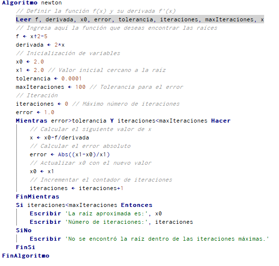
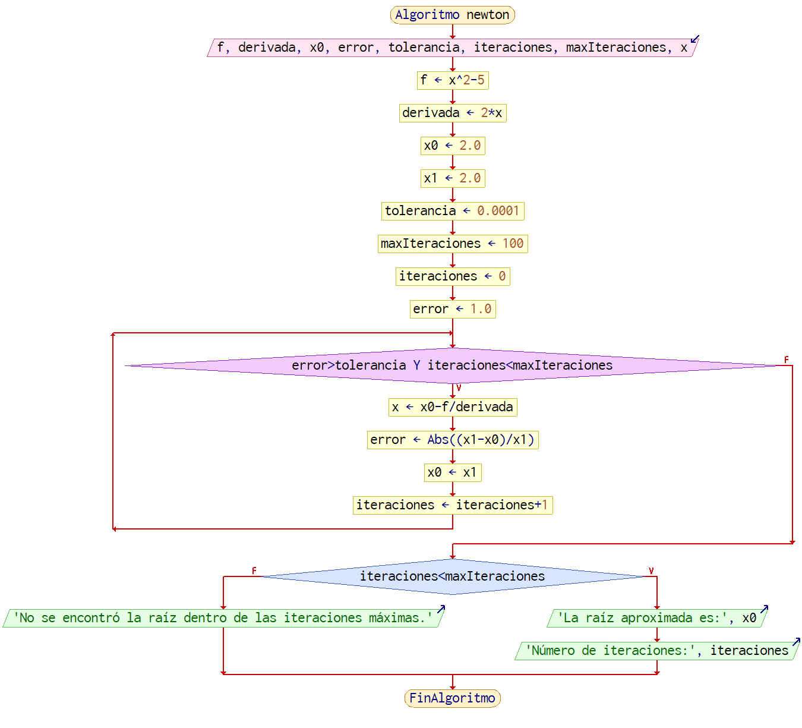

El método de Newton-Raphson sigue los siguientes pasos:
1. Seleccionar una aproximación inicial \(x_0\) para la raíz de la función.
2. Calcular la derivada de la función original.
3. Utilizar la fórmula de iteración:
\[ x_{n+1} = x_n - \frac{f(x_n)}{f'(x_n)} \]
donde \(f(x_n)\) es el valor de la funciónen \(x_n\) y \(f'(x_n)\) es el valor de la derivada en \(x_n\).
4. Repetir el paso 3 con la nueva aproximación \(x_{n+1}\) hasta que se alcance la precisión deseada o se cumpla un criterio de convergencia.
Estos pasos se repiten iterativamente hasta que se obtenga una aproximación satisfactoria de la raíz de la función.
Pseudocódigo y diagrama de flujo


Ejercicio